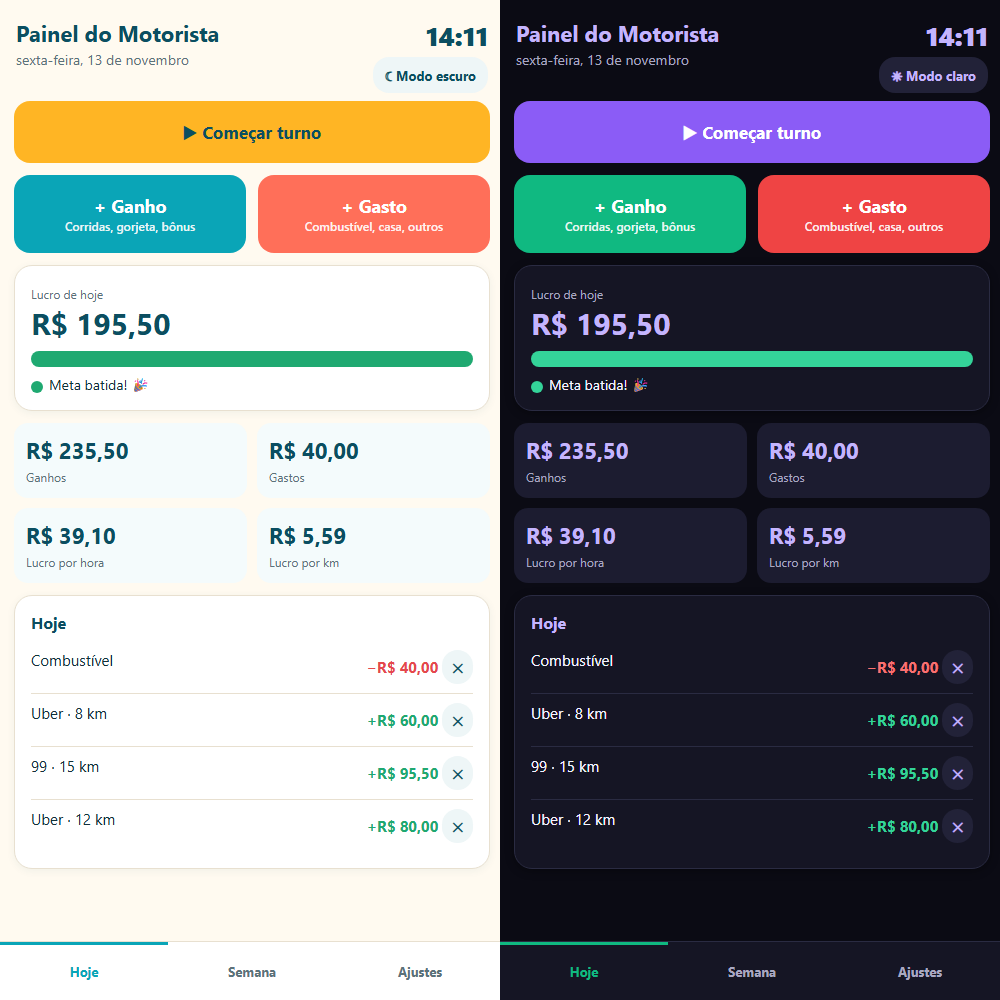

PARA MOTORISTA DE UBER, 99, INDRIVE E BOLT
Lance ganhos e gastos em segundos, direto do celular, e o painel mostra o lucro do dia, o lucro por hora e o lucro por km. Sem app para baixar e sem mensalidade.
Quero meu painelAcesso imediato · Funciona sem internet · Garantia de 15 dias

A corrida entra, o combustível sai, a comida sai, a manutenção aparece de repente. No fim do mês, o dinheiro some e você não sabe onde. Este painel mostra isso em números simples, todos os dias.
Seus dados ficam só no seu celular, no navegador. Você pode exportar para planilha quando quiser.
Respostas diretas, que valem com ou sem o painel:
Depende da cidade, das horas rodadas e dos custos. O que importa é o que sobra depois dos gastos: lucro = ganhos − gastos. Em vez de olhar a média dos outros, lance os seus ganhos e gastos no painel e veja o seu lucro por hora e por km.
Lucro por km = (ganhos − gastos) ÷ km rodados. Exemplo: R$ 195,50 de lucro em 90 km rodados dão cerca de R$ 2,17 por km. O painel faz essa conta sozinho quando você informa o km inicial e o final do turno.
Lucro por hora = lucro do dia ÷ horas trabalhadas. Exemplo: R$ 195,50 em 5 horas dão R$ 39,10 por hora. Conte o tempo ligado, não só o tempo com passageiro.
Combustível, alimentação, lavagem, pedágio e estacionamento no dia a dia. Para uma conta mais realista, some também uma parte de manutenção, seguro, IPVA e desgaste do carro. O painel mostra o lucro com os gastos que você lança, por isso quanto mais completo o lançamento, mais fiel o resultado.
Some o que precisa tirar no mês (contas e objetivo) mais os gastos fixos do carro e divida pelos dias que pretende rodar. Digite o resultado em Ajustes e a barra do painel mostra quanto falta para a meta.
Painel + planilha Excel + planilha Google Sheets + guia
Quero meu painel agoraGarantia de 15 dias: se não gostar, devolvemos o valor pela Hotmart.
Não. O painel abre no navegador do celular (Chrome, Safari). Pode salvar nos favoritos ou na tela inicial.
Sim, depois de aberto. Os dados ficam guardados no próprio celular.
Pode perder. Por isso existe o botão “Exportar para planilha”: faça uma cópia uma vez por semana.
Sim. Você escolhe a plataforma em cada ganho. Serve também para entregadores e motoristas particulares.
Sim, em qualquer celular com navegador moderno.
Não. É uma ferramenta de organização: ela mostra os seus números para você decidir melhor. Os resultados dependem de como e quanto você roda.
Não. Este é um produto pago, com pagamento único de R$ 29,90 e garantia de 15 dias, sem mensalidade.
Sim. O painel tem as telas Hoje, Semana e Ajustes, e você pode exportar tudo para planilha quando quiser.
Sim. Qualquer trabalho em que você lança ganhos e gastos do dia, como entregas de comida ou encomendas.